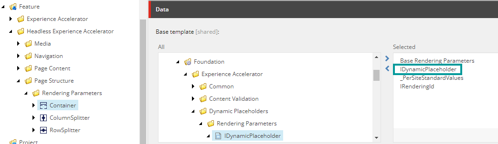
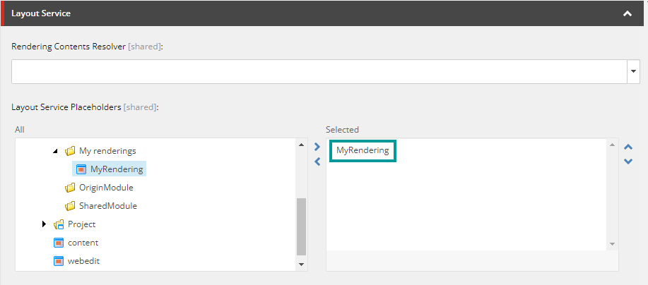

Walkthrough: Configure your renderings to use dynamic placeholders
How to configure your components to use dynamic placeholders.
You can use dynamic placeholders with your headless sites. Dynamic placeholders mean that unique placeholder keys are generated across different renderings and within one rendering.
To configure a rendering to use dynamic placeholders, you must:
Include the
IDynamicPlaceholderbase template in theRendering Parameterstemplate of the rendering you are interested in.In the placeholder settings item, define the placeholder key using a wildcard.
Link the placeholder settings item to the rendering. This is required to render the renderings inside the placeholder.
In the component TSX file, set the placeholder key value according to how it is defined in the placeholder settings item.
Add the IDynamicPlaceholder base template to the rendering parameters template
First, you must add the IDynamicPlaceholder base template to the rendering parameters template of the rendering that you want to enable dynamic placeholders for. IDynamicPlaceholder adds a parameter called DynamicPlaceholderID which, dynamically, assigns IDs to the placeholder key.
To add the IDynamicPlaceholder base template:
In the content tree, navigate to the Rendering Parameters folder and select the rendering parameters template.
Note
The location of the rendering parameter templates might differ, but there is a good chance that they are located here: sitecore/Templates/Feature.
On the Content tab, navigate to Templates/Foundation/Experience Accelerator/Dynamic Placeholders/Rendering Parameters.
Double-click the IDynamicPlaceholder item to make it appear in the Selected section. The screenshot below shows the rendering parameters template of the built-in Container rendering.
Configure the placeholder key to use the ID provided by the
DynamicPlaceholderIDparameter. See also Define the placeholder key using a wildcard.
Define the placeholder key using a wildcard
You must use a wildcard to define the placeholder key. Whenever an instance of the rendering is added to the placeholder, the DynamicPlaceholderID parameter generates a unique ID that dynamically replaces the wildcard used in the placeholder key value, for example myrendering-1, myrendering-2, and so on.
To define the placeholder key:
In the content tree, navigate to the placeholder settings item of the rendering that you want to enable dynamic placeholders for. Depending on where your renderings are stored, you might find the settings item in one of the following locations:
sitecore/Layout/Placeholder Settings/Feature.
sitecore/Layout/Placeholder Settings/Project.
Note
If the settings item does not already exist, create one and name it according to how the rendering is named.
Click the settings item and, in the Placeholder Key field, add the name of the component as defined in the component TSX file followed by -{*}, for example myrendering-{*}.
Save your changes.
Link the settings item to the rendering. See also Link the placeholder settings item to the rendering.
Link the placeholder settings item to the rendering
To be able to render the renderings inside the placeholder, you must link the placeholder settings item with the rendering through the Layout Service.
To link the placeholder settings item to the rendering:
In the content tree, navigate to sitecore/Layout/Renderings/Feature, open the folder that holds the rendering, and then click the rendering.
In the Layout Service Placeholders field, navigate to the placeholder settings item that you configured previously.
Double-click the placeholder settings item to make it appear in the Selected section.

Define the placeholder key in the component TSX file
In the component TSX file, when you define the placeholder rendering, you must pass the name defined in the Placeholder Key field to the phKey constant.
Code example:
const phKey = "container-{*}";
<Placeholder name={phKey} rendering={props.rendering} />